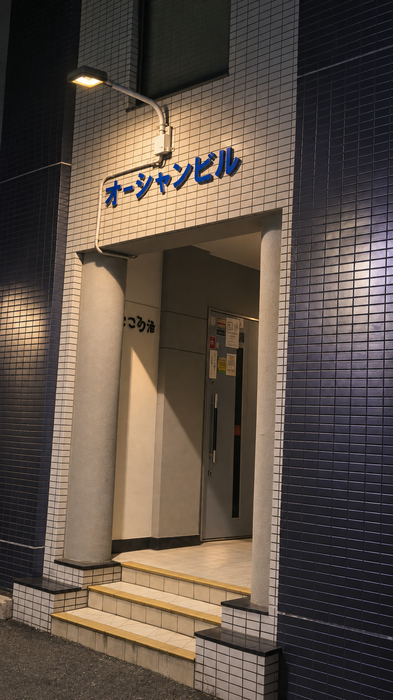

From the ferry terminal to 3F, Room 3-A
Agayha Studio is about a 6-minute walk (450 m) from Ishigaki Ferry Terminal. Enter Ocean Building in Misakicho and take the elevator to the 3rd floor.
See the 6-minute walk on a map and video
Google Maps estimates about 450 m and 6 minutes on foot. Use the overview to understand the location, then open Google Maps for live turn-by-turn navigation.

The yellow line is a simplified overview. Use Google Maps above for the exact turns from your current location.
Check the map, Ocean Building entrance, elevator and third floor in sequence.

Enter Ocean Building
Use the first-floor entrance of Ocean Building at 11-11 Misakicho.

Walk to the elevator
Continue inside from the entrance toward the elevator lobby.

Take the elevator to 3F
Enter the elevator and select the 3rd floor.

Continue to Room 3-A
Exit on the 3rd floor and continue to Room 3-A, where Agayha Studio is located.